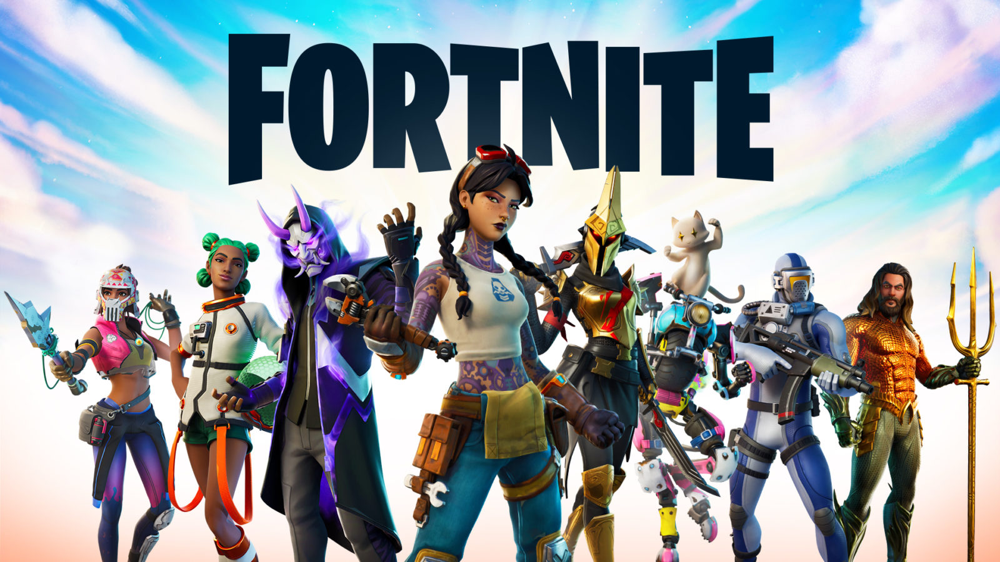

I'm a 4th year student studying BA in Digital Art. I am a passionate gamer and competitive player in the African Fortnite community. My goal is to continue playing competitively and do more content creation.
I started uploading YouTube videos of my gameplay about a year ago but because of obligations in and out of campus I only managed to upload videos once every 2 months or so.
Besides gaming, I have a lot!! of hobbies. Growing up I never played a lot of games I spent most of my time playing sports, doing martial art and robotics. I played for Mondeor Meteors football club from the age of 15-16 before giving it up to pursue martial arts again. I started Martial arts at the age of 12 at the Winchester Hill Martial arts centre under Sifu Mark. I flourished in martial arts moving up to the advanced class in only 3 month, this class consisted of mostly adults with one 16 year old, both I and Chris were the youngest students in the class at the age of 12. I was quite fragile at this point and because of the intensive training regimen I sustained a serious leg injury after 2 years in the advanced class. I had torn my left medial collateral ligament and worn out my right one. At this point I could barely walk and as out of martial arts and physical exercise for 6-8 months.
A year after I decided to go back to training and was persuaded by one of my best friends to join his football club. There was a lot of running and I was a decent defender, but I liked the training and free play more than the actual games. We played teams like Orlando Pirates and Kaizer Chiefs F.C. in the Safa league.
It was fun while it lasted but I had ever really been interested in football to begin with so I decided that I would go back to my true love “Martial Arts”. Where I would go on to place 3rd in sparring and 2nd in northern barehand in the first tournament held at our school and included 2 other large martial art schools.
I did martial arts until matric then stopped once I join university as my parents though it best to focus on my studies, in their defence I only really cared about martial arts. Matric was where I started playing games, it started with anime, I finished Naruto and when trying to find something similar I came across Sword Art online.
This is by no means the best anime, not in any sense of the word but it presented an idea that completely captive me. If you have not watched it, you should definitely check it out. It is about gamers who jump into a new game that got released with a rig which allows them to full dive into the game, this means being in control of their actual virtual character with their own proprioception. In this world they have incredible power but there is a twist, which I will not spoil. Anyway, back to topic I tried to find a game what would give me a similar experience, that were I found it, “Sword of Chaos”. It was a mobile MMO and pay to win, despite this I still consider it one of the best games I’ve have every played.
The feeling of being in a guild and the constant interaction with other player, the cry for all out war and overcoming overwhelming odds with your guild was possible the greatest feeling I have felt to date. This game inspired be and it is the main reason for my interest in game development and gaming in general. I want to be able to give players the opportunity to feel that feeling of triumph that I felt. I could go on but by now you know me fairly well.